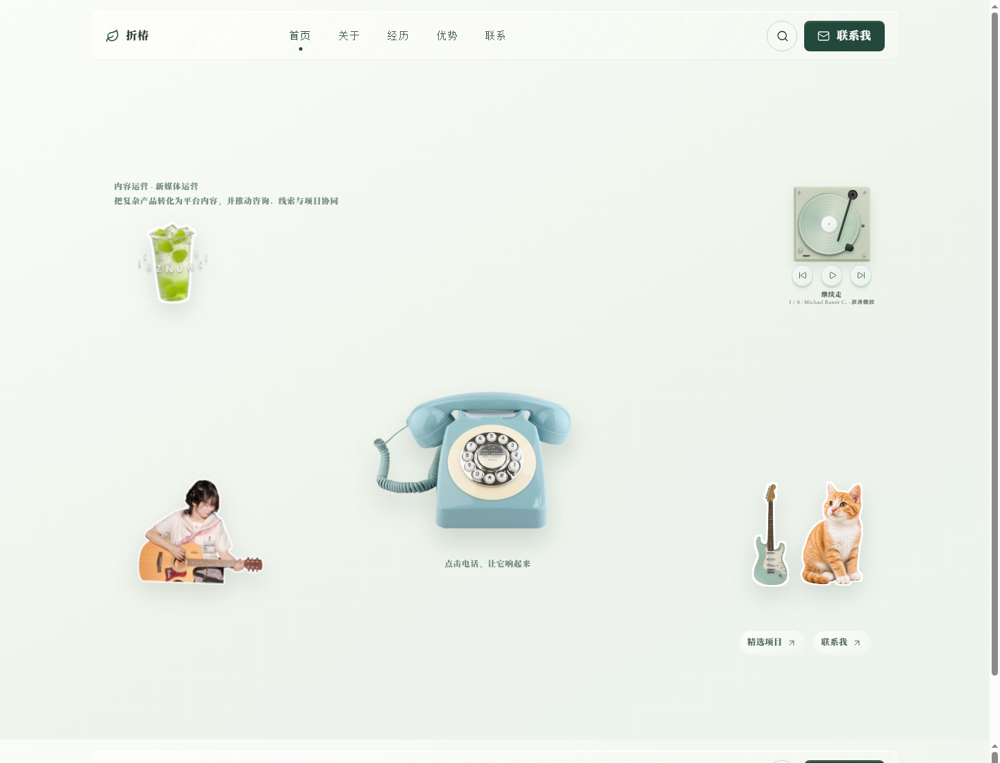

打开菜单
点击顶部“关于 / 经历 / 优势 / 联系”，直接切换到对应章节。
从首页出发，快速找到完整经历、全部案例与真实联系入口。

点击顶部“关于 / 经历 / 优势 / 联系”，直接切换到对应章节。
进入“关于”，找到“查看全部 7 段经历”，展开即可逐段阅读职责与成果。
进入“经历”，打开 CCD 屏幕后浏览 12 个项目，也可展开案例汇总列表。
点击“联系我”，可填写表单发送，也可直接写信到公开邮箱。
在“关于”页面的拍立得、履历雨伞下方，点击入口展开完整列表。每一段都包含时间、职位、公司、职责、成果，适合按时间线快速查看。
页面底部的“经历”提示会继续带你进入案例总览。手机端不需要记住路径，顺着页面向下即可。
进入“经历”后，点击银色 CCD 右上方的模式转盘。屏幕亮起后，项目胶卷与 12 个项目总览会出现。
胶卷可以横向拖动；不想拖动时，点击“查看运营核心案例与 AI 实验室”，按 01—12 选择项目。
每个项目都能打开独立阅读窗口，查看项目概述、核心数据、截图轮播与补充材料。
打开案例窗口后，找到“原始作品 / 作品链接”区域，点击后会在新页面打开对应作品；看完可关闭窗口回到原位置。
你可以直接复制邮箱写信，也可以在“联系”页提交留言表单。表单会通过 FormSubmit 转发到同一收件邮箱。